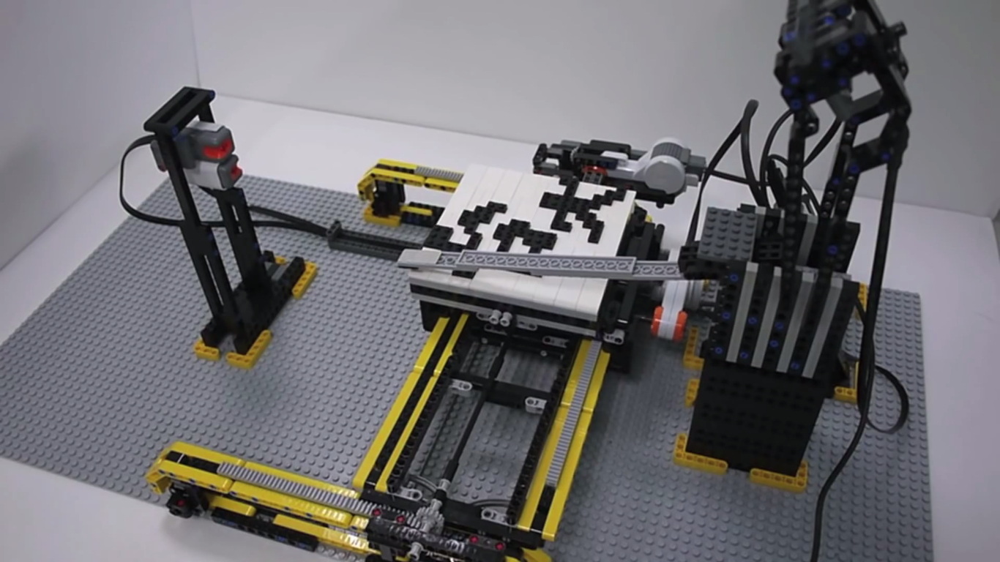

2010到2011年連續參加全國田間機器人大賽，為因應沙土場地，使用履帶車設計，履帶車是購買鋁材機械加工製成，使車子自己行走則使用單晶片、C#與感測器進行控制。
內視鏡訓練箱主要是醫院提供給需要微創手術的醫生練習，強化學生臨床自信心，箱子是使用壓克力以雷射切割完成製作。

由於AFM為奈米科學和奈米技術中最基礎和最廣泛使用的工具之一，因此製作利用樂高AFM使用於奈米科學教育，結構部分以樂高積木組成，利用紅外線與接收器，以程式判斷紅外面反射的角度在Labview上呈現圖案。

碩士專題為研究利用微機電製程製作生物晶片，應用於雞隻的DNA與遺傳疾病的檢測。